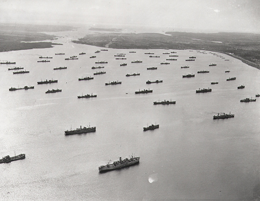
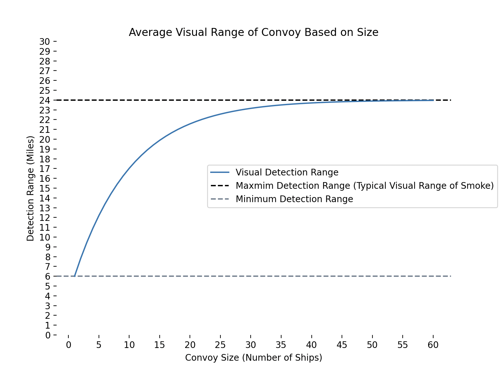
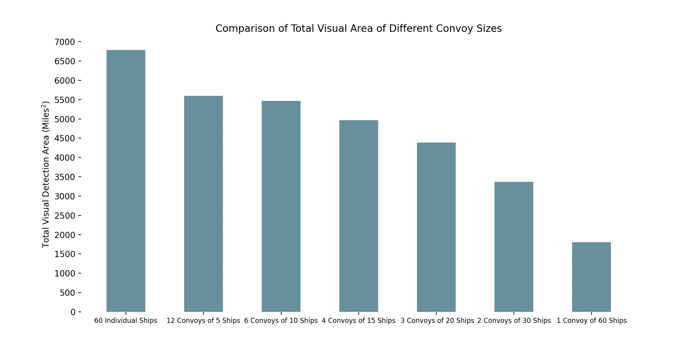
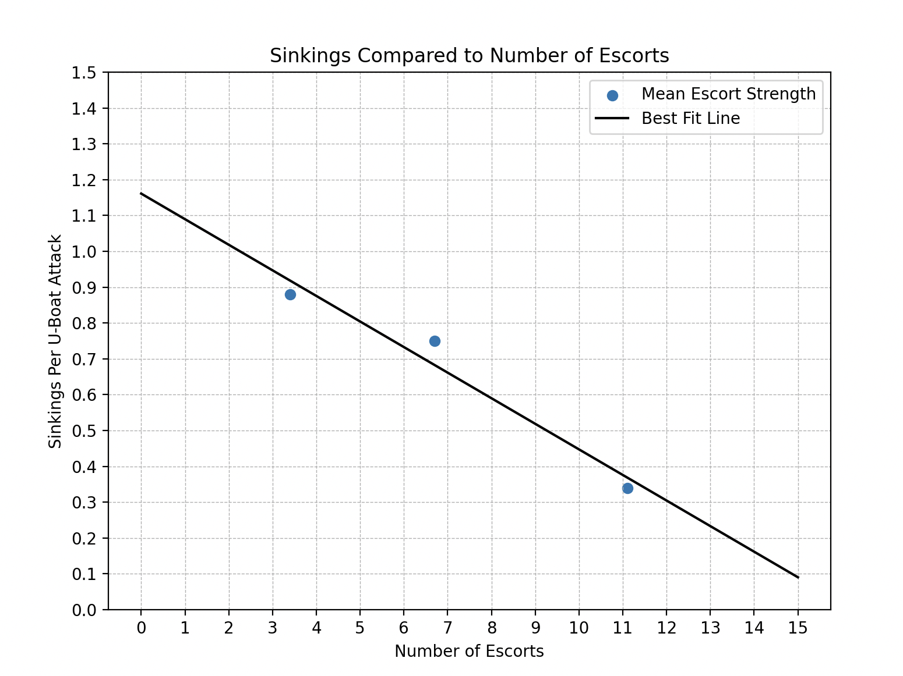
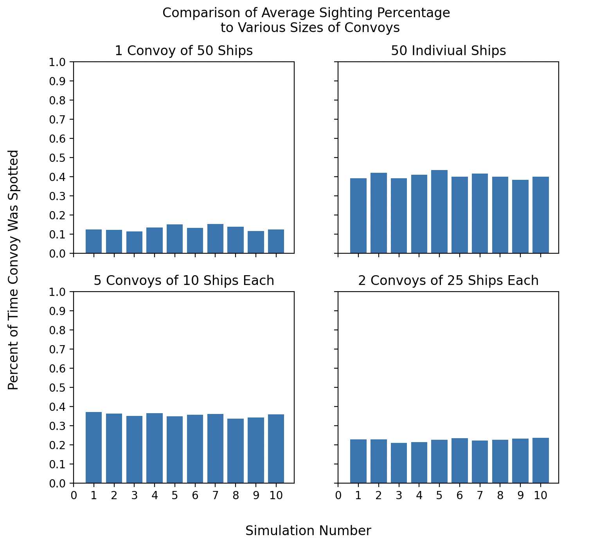

The Original Project:
The scene is summer 2023. Eager to use my new skills in data science, I am searching for a project topic that intersects my passion for history. Many hours of researching various historical topics led me to this website: link. A 1946 Operations Evaluation Group report on antisubmarine warfare in World War Two. I was immediately hooked, the formulas and statistics were a perfect starting point to base my project off. Thus my goal was born: a look into the effectiveness of the convoy system.
The first aspect the Evaluation Group report examined was the reduction number of contacts made by submarines when in a convoy formation. Essentially, the idea of safety in numbers. This aspect is quantified with the formula: R2 - (1 - b)n(R2 - R1) with R1 being the visual range of a ship itself, R2 the visual range of smoke, b the fraction of the time a ship smokes, and n the number of ships in the convoy. The visualization for this formula is below:  As the number of ships increases, the average detection range approaches the maximin detection range of smoke. In a large convoy, it is safe to assume at least one ship is producing smoke and thus the average detection range for convoys above 20 ships is about the visual range of smoke. This means increasing a convoy size from 20 to 60, does little to increase its detection range. Additionally, three convoys of 20 ships would be needed to match one convoy of 60 ships, making large convoys even more effective.  Another benefit of convoys is the ability to combine resources, particularly with the allocation of escort ships and air cover. One large convoy allows for the use of all available escorts, greatly increasing the escorts ability to neutralize U-Boat threats. This is in contrast to individual ships or multiple convoys, where the available escorts must be divided up, hindering their effectiveness. The same concept applies to air cover, although this is not discussed here. Approximations of the effect of escort strength can be made from data pertaining to merchant ship losses and their mean escort strength during 1941-1942 in the North Atlantic: 
Part Two: Simulations
To further explore the convoy system, simple simulations were preformed. Tests were done on four types of convoys: 50 individual ships, 5 convoys of 10 ships, 2 convoys of 25 ships, and 1 convoy of 50 ships. The convoys and 50 U-Boats were randomly placed on a grid of 1000 by 750 miles. A sighting was recorded when a U-Boat fell within the visual range of a convoy. Of course this is an overly simplified simulation of real life conditions, however, the strength of the convoy system can still be seen. Visualizations are the simulations are below:
To limit random variation, each simulation consisted of 1,000 tests and simulations were preformed 10 times for each convoy size. The
results for the average sighting percentage can be found below:

Now, factoring in the effect of escorts and a submarine firing a typical volley of four torpedoes, a calculation for sink percentage can be
included to further highlight the benefits of large convoys:
The one convoy of 50 ships is the clear best choice for limiting the number of potential sinkings. However, this is an over simplified model
meant to highlight the advantages of a reduced total visual area and an increased number of escort ships. Many other factors including
air cover, time of day, number of U-Boats attacking, and more affect convoys. A look at the Operations Evaluation Group's calculated relative
loss rate gives another perspective:
 A look at real WWII convoy data comparing convoy sizes backs up these results:
A look at real WWII convoy data comparing convoy sizes backs up these results:
 Although this data also does not include individual ships, there is a clear correlation between convoy size and sink percentage.
Increasing convoy size decreases the chance of a sinking despite the many other factors which go into convoy sinkings. Thus, the average
convoy ranged between 45-60 ships as increasing convoy size was the most simple tool in combating U-boats.
Although this data also does not include individual ships, there is a clear correlation between convoy size and sink percentage.
Increasing convoy size decreases the chance of a sinking despite the many other factors which go into convoy sinkings. Thus, the average
convoy ranged between 45-60 ships as increasing convoy size was the most simple tool in combating U-boats.
Links:
My article on Medium:
Medium Article
Operations Evaluation Group Report Number 51:
OEG Report
All the code and additional graphs used in the research:
Code and Graphs